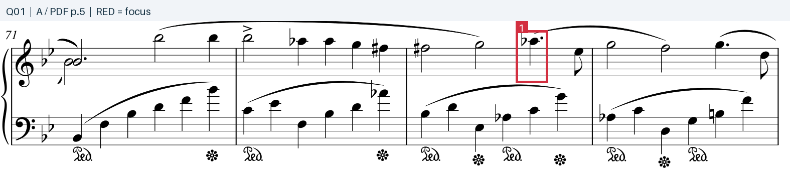

Q01谱面 × 原音
第73—74小节的主旋律中，演奏者对哪一个音使用了最明显的弹性节奏（rubato）处理？
简答 / ANSWER
Ab5依据与解释
第73小节的 Ab5 是这里最显著的延宕点。对照记谱的附点四分音符，频谱起音定位约为03:04.16，下一旋律音 Eb5 约在03:04.80，间隔约0.64秒；邻近四分音符的局部脉冲约0.25—0.30秒。把记谱时值因素扣除后，这个 Ab5 仍被明显拉宽。这里将 rubato 理解为旋律的时间伸缩，而非弹错节奏。
查看英文原题与答案格式
Which note of the main melody is played with the most rubato in bars 73-74?
答案格式：音名及八度，例如 C#4。
原录音证据
01 / 73—74小节：比较附点旋律音与邻近脉冲
A · 原录音 02:59 — 03:08 · 9.0秒 · WAV / 44.1kHz / 16-bit / 双声道
原录音 02:59
标注谱面证据
原PDF第 5 页 · 谱例 1打开原尺寸 ↗
